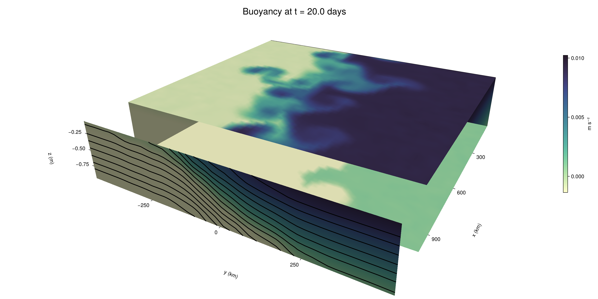

Baroclinic adjustment
In this example, we simulate the evolution and equilibration of a baroclinically unstable front.
Install dependencies
First let's make sure we have all required packages installed.
using Pkg
pkg"add Oceananigans, CairoMakie"using Oceananigans
using Oceananigans.UnitsGrid
We use a three-dimensional channel that is periodic in the x direction:
Lx = 1000kilometers # east-west extent [m]
Ly = 1000kilometers # north-south extent [m]
Lz = 1kilometers # depth [m]
grid = RectilinearGrid(size = (48, 48, 8),
x = (0, Lx),
y = (-Ly/2, Ly/2),
z = (-Lz, 0),
topology = (Periodic, Bounded, Bounded))48×48×8 RectilinearGrid{Float64, Periodic, Bounded, Bounded} on CPU with 3×3×3 halo
├── Periodic x ∈ [0.0, 1.0e6) regularly spaced with Δx=20833.3
├── Bounded y ∈ [-500000.0, 500000.0] regularly spaced with Δy=20833.3
└── Bounded z ∈ [-1000.0, 0.0] regularly spaced with Δz=125.0Model
We built a HydrostaticFreeSurfaceModel with an ImplicitFreeSurface solver. Regarding Coriolis, we use a beta-plane centered at 45° South.
model = HydrostaticFreeSurfaceModel(; grid,
coriolis = BetaPlane(latitude = -45),
buoyancy = BuoyancyTracer(),
tracers = :b,
momentum_advection = WENO(),
tracer_advection = WENO())HydrostaticFreeSurfaceModel{CPU, RectilinearGrid}(time = 0 seconds, iteration = 0)
├── grid: 48×48×8 RectilinearGrid{Float64, Periodic, Bounded, Bounded} on CPU with 3×3×3 halo
├── timestepper: QuasiAdamsBashforth2TimeStepper
├── tracers: b
├── closure: Nothing
├── buoyancy: BuoyancyTracer with ĝ = NegativeZDirection()
├── free surface: ImplicitFreeSurface with gravitational acceleration 9.80665 m s⁻²
│ └── solver: FFTImplicitFreeSurfaceSolver
├── advection scheme:
│ ├── momentum: WENO reconstruction order 5
│ └── b: WENO reconstruction order 5
└── coriolis: BetaPlane{Float64}We start our simulation from rest with a baroclinically unstable buoyancy distribution. We use ramp(y, Δy), defined below, to specify a front with width Δy and horizontal buoyancy gradient M². We impose the front on top of a vertical buoyancy gradient N² and a bit of noise.
"""
ramp(y, Δy)
Linear ramp from 0 to 1 between -Δy/2 and +Δy/2.
For example:
```
y < -Δy/2 => ramp = 0
-Δy/2 < y < -Δy/2 => ramp = y / Δy
y > Δy/2 => ramp = 1
```
"""
ramp(y, Δy) = min(max(0, y/Δy + 1/2), 1)
N² = 1e-5 # [s⁻²] buoyancy frequency / stratification
M² = 1e-7 # [s⁻²] horizontal buoyancy gradient
Δy = 100kilometers # width of the region of the front
Δb = Δy * M² # buoyancy jump associated with the front
ϵb = 1e-2 * Δb # noise amplitude
bᵢ(x, y, z) = N² * z + Δb * ramp(y, Δy) + ϵb * randn()
set!(model, b=bᵢ)Let's visualize the initial buoyancy distribution.
using CairoMakie
# Build coordinates with units of kilometers
x, y, z = 1e-3 .* nodes(grid, (Center(), Center(), Center()))
b = model.tracers.b
fig, ax, hm = heatmap(y, z, interior(b)[1, :, :],
colormap=:deep,
axis = (xlabel = "y [km]",
ylabel = "z [km]",
title = "b(x=0, y, z, t=0)",
titlesize = 24))
Colorbar(fig[1, 2], hm, label = "[m s⁻²]")
fig
Simulation
Now let's build a Simulation.
simulation = Simulation(model, Δt=20minutes, stop_time=20days)Simulation of HydrostaticFreeSurfaceModel{CPU, RectilinearGrid}(time = 0 seconds, iteration = 0)
├── Next time step: 20 minutes
├── Elapsed wall time: 0 seconds
├── Wall time per iteration: NaN days
├── Stop time: 20 days
├── Stop iteration : Inf
├── Wall time limit: Inf
├── Callbacks: OrderedDict with 4 entries:
│ ├── stop_time_exceeded => Callback of stop_time_exceeded on IterationInterval(1)
│ ├── stop_iteration_exceeded => Callback of stop_iteration_exceeded on IterationInterval(1)
│ ├── wall_time_limit_exceeded => Callback of wall_time_limit_exceeded on IterationInterval(1)
│ └── nan_checker => Callback of NaNChecker for u on IterationInterval(100)
├── Output writers: OrderedDict with no entries
└── Diagnostics: OrderedDict with no entriesWe add a TimeStepWizard callback to adapt the simulation's time-step,
conjure_time_step_wizard!(simulation, IterationInterval(20), cfl=0.2, max_Δt=20minutes)Also, we add a callback to print a message about how the simulation is going,
using Printf
wall_clock = Ref(time_ns())
function print_progress(sim)
u, v, w = model.velocities
progress = 100 * (time(sim) / sim.stop_time)
elapsed = (time_ns() - wall_clock[]) / 1e9
@printf("[%05.2f%%] i: %d, t: %s, wall time: %s, max(u): (%6.3e, %6.3e, %6.3e) m/s, next Δt: %s\n",
progress, iteration(sim), prettytime(sim), prettytime(elapsed),
maximum(abs, u), maximum(abs, v), maximum(abs, w), prettytime(sim.Δt))
wall_clock[] = time_ns()
return nothing
end
add_callback!(simulation, print_progress, IterationInterval(100))Diagnostics/Output
Here, we save the buoyancy, $b$, at the edges of our domain as well as the zonal ($x$) average of buoyancy.
u, v, w = model.velocities
ζ = ∂x(v) - ∂y(u)
B = Average(b, dims=1)
U = Average(u, dims=1)
V = Average(v, dims=1)
filename = "baroclinic_adjustment"
save_fields_interval = 0.5day
slicers = (east = (grid.Nx, :, :),
north = (:, grid.Ny, :),
bottom = (:, :, 1),
top = (:, :, grid.Nz))
for side in keys(slicers)
indices = slicers[side]
simulation.output_writers[side] = JLD2OutputWriter(model, (; b, ζ);
filename = filename * "_$(side)_slice",
schedule = TimeInterval(save_fields_interval),
overwrite_existing = true,
indices)
end
simulation.output_writers[:zonal] = JLD2OutputWriter(model, (; b=B, u=U, v=V);
filename = filename * "_zonal_average",
schedule = TimeInterval(save_fields_interval),
overwrite_existing = true)JLD2OutputWriter scheduled on TimeInterval(12 hours):
├── filepath: ./baroclinic_adjustment_zonal_average.jld2
├── 3 outputs: (b, u, v)
├── array type: Array{Float64}
├── including: [:grid, :coriolis, :buoyancy, :closure]
├── file_splitting: NoFileSplitting
└── file size: 29.3 KiBNow we're ready to run.
@info "Running the simulation..."
run!(simulation)
@info "Simulation completed in " * prettytime(simulation.run_wall_time)[ Info: Running the simulation...
[ Info: Initializing simulation...
[00.00%] i: 0, t: 0 seconds, wall time: 13.400 seconds, max(u): (0.000e+00, 0.000e+00, 0.000e+00) m/s, next Δt: 20 minutes
[ Info: ... simulation initialization complete (13.517 seconds)
[ Info: Executing initial time step...
[ Info: ... initial time step complete (19.059 seconds).
[06.94%] i: 100, t: 1.389 days, wall time: 36.315 seconds, max(u): (1.270e-01, 1.286e-01, 1.487e-03) m/s, next Δt: 20 minutes
[13.89%] i: 200, t: 2.778 days, wall time: 4.255 seconds, max(u): (2.207e-01, 2.239e-01, 1.714e-03) m/s, next Δt: 20 minutes
[20.83%] i: 300, t: 4.167 days, wall time: 4.090 seconds, max(u): (3.034e-01, 3.051e-01, 2.175e-03) m/s, next Δt: 20 minutes
[27.78%] i: 400, t: 5.556 days, wall time: 4.117 seconds, max(u): (4.088e-01, 4.162e-01, 2.234e-03) m/s, next Δt: 20 minutes
[34.72%] i: 500, t: 6.944 days, wall time: 4.029 seconds, max(u): (4.819e-01, 5.697e-01, 2.458e-03) m/s, next Δt: 20 minutes
[41.67%] i: 600, t: 8.333 days, wall time: 4.085 seconds, max(u): (6.242e-01, 8.856e-01, 3.170e-03) m/s, next Δt: 20 minutes
[48.61%] i: 700, t: 9.722 days, wall time: 4.060 seconds, max(u): (8.951e-01, 1.148e+00, 3.864e-03) m/s, next Δt: 20 minutes
[55.56%] i: 800, t: 11.111 days, wall time: 4.117 seconds, max(u): (1.244e+00, 1.151e+00, 4.767e-03) m/s, next Δt: 20 minutes
[62.50%] i: 900, t: 12.500 days, wall time: 4.035 seconds, max(u): (1.341e+00, 1.400e+00, 3.899e-03) m/s, next Δt: 20 minutes
[69.44%] i: 1000, t: 13.889 days, wall time: 4.221 seconds, max(u): (1.225e+00, 1.638e+00, 3.915e-03) m/s, next Δt: 20 minutes
[76.39%] i: 1100, t: 15.278 days, wall time: 4.301 seconds, max(u): (1.223e+00, 1.393e+00, 2.787e-03) m/s, next Δt: 20 minutes
[83.33%] i: 1200, t: 16.667 days, wall time: 4.064 seconds, max(u): (1.301e+00, 1.220e+00, 2.978e-03) m/s, next Δt: 20 minutes
[90.28%] i: 1300, t: 18.056 days, wall time: 4.121 seconds, max(u): (1.299e+00, 1.010e+00, 2.878e-03) m/s, next Δt: 20 minutes
[97.22%] i: 1400, t: 19.444 days, wall time: 4.706 seconds, max(u): (1.422e+00, 1.206e+00, 2.881e-03) m/s, next Δt: 20 minutes
[ Info: Simulation is stopping after running for 1.604 minutes.
[ Info: Simulation time 20 days equals or exceeds stop time 20 days.
[ Info: Simulation completed in 1.606 minutes
Visualization
All that's left is to make a pretty movie. Actually, we make two visualizations here. First, we illustrate how to make a 3D visualization with Makie's Axis3 and Makie.surface. Then we make a movie in 2D. We use CairoMakie in this example, but note that using GLMakie is more convenient on a system with OpenGL, as figures will be displayed on the screen.
using CairoMakieThree-dimensional visualization
We load the saved buoyancy output on the top, bottom, north, and east surface as FieldTimeSerieses.
filename = "baroclinic_adjustment"
sides = keys(slicers)
slice_filenames = NamedTuple(side => filename * "_$(side)_slice.jld2" for side in sides)
b_timeserieses = (east = FieldTimeSeries(slice_filenames.east, "b"),
north = FieldTimeSeries(slice_filenames.north, "b"),
bottom = FieldTimeSeries(slice_filenames.bottom, "b"),
top = FieldTimeSeries(slice_filenames.top, "b"))
B_timeseries = FieldTimeSeries(filename * "_zonal_average.jld2", "b")
times = B_timeseries.times
grid = B_timeseries.grid48×48×8 RectilinearGrid{Float64, Periodic, Bounded, Bounded} on CPU with 3×3×3 halo
├── Periodic x ∈ [0.0, 1.0e6) regularly spaced with Δx=20833.3
├── Bounded y ∈ [-500000.0, 500000.0] regularly spaced with Δy=20833.3
└── Bounded z ∈ [-1000.0, 0.0] regularly spaced with Δz=125.0We build the coordinates. We rescale horizontal coordinates to kilometers.
xb, yb, zb = nodes(b_timeserieses.east)
xb = xb ./ 1e3 # convert m -> km
yb = yb ./ 1e3 # convert m -> km
Nx, Ny, Nz = size(grid)
x_xz = repeat(x, 1, Nz)
y_xz_north = y[end] * ones(Nx, Nz)
z_xz = repeat(reshape(z, 1, Nz), Nx, 1)
x_yz_east = x[end] * ones(Ny, Nz)
y_yz = repeat(y, 1, Nz)
z_yz = repeat(reshape(z, 1, Nz), grid.Ny, 1)
x_xy = x
y_xy = y
z_xy_top = z[end] * ones(grid.Nx, grid.Ny)
z_xy_bottom = z[1] * ones(grid.Nx, grid.Ny)Then we create a 3D axis. We use zonal_slice_displacement to control where the plot of the instantaneous zonal average flow is located.
fig = Figure(size = (1600, 800))
zonal_slice_displacement = 1.2
ax = Axis3(fig[2, 1],
aspect=(1, 1, 1/5),
xlabel = "x (km)",
ylabel = "y (km)",
zlabel = "z (m)",
xlabeloffset = 100,
ylabeloffset = 100,
zlabeloffset = 100,
limits = ((x[1], zonal_slice_displacement * x[end]), (y[1], y[end]), (z[1], z[end])),
elevation = 0.45,
azimuth = 6.8,
xspinesvisible = false,
zgridvisible = false,
protrusions = 40,
perspectiveness = 0.7)Axis3()We use data from the final savepoint for the 3D plot. Note that this plot can easily be animated by using Makie's Observable. To dive into Observables, check out Makie.jl's Documentation.
n = length(times)41Now let's make a 3D plot of the buoyancy and in front of it we'll use the zonally-averaged output to plot the instantaneous zonal-average of the buoyancy.
b_slices = (east = interior(b_timeserieses.east[n], 1, :, :),
north = interior(b_timeserieses.north[n], :, 1, :),
bottom = interior(b_timeserieses.bottom[n], :, :, 1),
top = interior(b_timeserieses.top[n], :, :, 1))
# Zonally-averaged buoyancy
B = interior(B_timeseries[n], 1, :, :)
clims = 1.1 .* extrema(b_timeserieses.top[n][:])
kwargs = (colorrange=clims, colormap=:deep)
surface!(ax, x_yz_east, y_yz, z_yz; color = b_slices.east, kwargs...)
surface!(ax, x_xz, y_xz_north, z_xz; color = b_slices.north, kwargs...)
surface!(ax, x_xy, y_xy, z_xy_bottom ; color = b_slices.bottom, kwargs...)
surface!(ax, x_xy, y_xy, z_xy_top; color = b_slices.top, kwargs...)
sf = surface!(ax, zonal_slice_displacement .* x_yz_east, y_yz, z_yz; color = B, kwargs...)
contour!(ax, y, z, B; transformation = (:yz, zonal_slice_displacement * x[end]),
levels = 15, linewidth = 2, color = :black)
Colorbar(fig[2, 2], sf, label = "m s⁻²", height = Relative(0.4), tellheight=false)
title = "Buoyancy at t = " * string(round(times[n] / day, digits=1)) * " days"
fig[1, 1:2] = Label(fig, title; fontsize = 24, tellwidth = false, padding = (0, 0, -120, 0))
rowgap!(fig.layout, 1, Relative(-0.2))
colgap!(fig.layout, 1, Relative(-0.1))
save("baroclinic_adjustment_3d.png", fig)
Two-dimensional movie
We make a 2D movie that shows buoyancy $b$ and vertical vorticity $ζ$ at the surface, as well as the zonally-averaged zonal and meridional velocities $U$ and $V$ in the $(y, z)$ plane. First we load the FieldTimeSeries and extract the additional coordinates we'll need for plotting
ζ_timeseries = FieldTimeSeries(slice_filenames.top, "ζ")
U_timeseries = FieldTimeSeries(filename * "_zonal_average.jld2", "u")
B_timeseries = FieldTimeSeries(filename * "_zonal_average.jld2", "b")
V_timeseries = FieldTimeSeries(filename * "_zonal_average.jld2", "v")
xζ, yζ, zζ = nodes(ζ_timeseries)
yv = ynodes(V_timeseries)
xζ = xζ ./ 1e3 # convert m -> km
yζ = yζ ./ 1e3 # convert m -> km
yv = yv ./ 1e3 # convert m -> km49-element Vector{Float64}:
-500.0
-479.1666666666667
-458.3333333333333
-437.5
-416.6666666666667
-395.8333333333333
-375.0
-354.1666666666667
-333.3333333333333
-312.5
-291.6666666666667
-270.8333333333333
-250.0
-229.16666666666666
-208.33333333333334
-187.5
-166.66666666666666
-145.83333333333334
-125.0
-104.16666666666667
-83.33333333333333
-62.5
-41.666666666666664
-20.833333333333332
0.0
20.833333333333332
41.666666666666664
62.5
83.33333333333333
104.16666666666667
125.0
145.83333333333334
166.66666666666666
187.5
208.33333333333334
229.16666666666666
250.0
270.8333333333333
291.6666666666667
312.5
333.3333333333333
354.1666666666667
375.0
395.8333333333333
416.6666666666667
437.5
458.3333333333333
479.1666666666667
500.0Next, we set up a plot with 4 panels. The top panels are large and square, while the bottom panels get a reduced aspect ratio through rowsize!.
set_theme!(Theme(fontsize=24))
fig = Figure(size=(1800, 1000))
axb = Axis(fig[1, 2], xlabel="x (km)", ylabel="y (km)", aspect=1)
axζ = Axis(fig[1, 3], xlabel="x (km)", ylabel="y (km)", aspect=1, yaxisposition=:right)
axu = Axis(fig[2, 2], xlabel="y (km)", ylabel="z (m)")
axv = Axis(fig[2, 3], xlabel="y (km)", ylabel="z (m)", yaxisposition=:right)
rowsize!(fig.layout, 2, Relative(0.3))To prepare a plot for animation, we index the timeseries with an Observable,
n = Observable(1)
b_top = @lift interior(b_timeserieses.top[$n], :, :, 1)
ζ_top = @lift interior(ζ_timeseries[$n], :, :, 1)
U = @lift interior(U_timeseries[$n], 1, :, :)
V = @lift interior(V_timeseries[$n], 1, :, :)
B = @lift interior(B_timeseries[$n], 1, :, :)Observable([-0.009394036391367213 -0.008140703662255123 -0.006877415310063632 -0.005636625807701363 -0.00435330475011433 -0.0031211872175412833 -0.0018757095554152966 -0.0006426674343723173; -0.009388444135092329 -0.008152799120558345 -0.0068640880642124895 -0.005632910431048956 -0.004391089414279973 -0.0031146375983594266 -0.0018652498038879584 -0.0006081533958554049; -0.009384768639536934 -0.00810325483551017 -0.006898060920626728 -0.005646365633677257 -0.004369810815648995 -0.0031240153158387687 -0.001904025679237277 -0.0006335322640089962; -0.00938083735660882 -0.008147413298905443 -0.00688968040993735 -0.005639536141814699 -0.004379805631402418 -0.003104842202664398 -0.001900970990782927 -0.0006268726893102946; -0.009368767552731425 -0.008113646027471553 -0.006868418859109426 -0.0056321891158150105 -0.004363801235572429 -0.003134963613590921 -0.0018470787219446447 -0.0006254496224206888; -0.009378796782150587 -0.008143403608725903 -0.00688881544003752 -0.005655933568563927 -0.0043375326707415255 -0.0031164073327900475 -0.0018861826023745742 -0.0006487077693619366; -0.009369512347384428 -0.008133381786239504 -0.006874089722311631 -0.005632130325973019 -0.004391752057258281 -0.0031234946395611884 -0.001896586992577009 -0.0006283242715985961; -0.009369400010948327 -0.008102535406265198 -0.006857732543790267 -0.005610903636551412 -0.004390935128332516 -0.0031299727152049837 -0.0018607668681736318 -0.0006208086625060202; -0.009398515015186558 -0.008138668265390636 -0.006881972309531275 -0.005616542524578637 -0.004381059342656987 -0.003124277327308403 -0.001882061990978173 -0.0006408990381013908; -0.009398338533828415 -0.008135051185965941 -0.006885027643927014 -0.005616359023151586 -0.004383352322011761 -0.003124895469418553 -0.0018639875758145752 -0.0006204636341058126; -0.009359351613704997 -0.008125911959105734 -0.00687735539378381 -0.005645550370037407 -0.0043881498980939725 -0.0031177009223858445 -0.0018745830563685003 -0.0006363070096650321; -0.00936054046012412 -0.008145515904451386 -0.006882155013750876 -0.005629375773649849 -0.004390944621807463 -0.0031209563152463583 -0.0018998264564859398 -0.0006253290845282192; -0.009363931254861365 -0.008137944458473887 -0.006851972127818338 -0.005609439646813417 -0.004414338599268256 -0.003138594096805628 -0.0018831592553544814 -0.0006227925795313435; -0.009396068450378702 -0.008112560844497472 -0.00687081009030401 -0.005615881243829544 -0.004350964438913718 -0.003085772330664399 -0.0018642505368751843 -0.0006359747388658535; -0.009397250391560015 -0.008103013047759828 -0.006878552568732085 -0.005647499008806221 -0.004378000650936598 -0.003158284262351131 -0.0018793239218337435 -0.0006379147177924992; -0.00937570489053522 -0.008124905718598785 -0.006869188830610773 -0.005648870633547395 -0.0043585229083218215 -0.003083321132601616 -0.0018808695339839192 -0.0006326595462480854; -0.009373641051021562 -0.00813119195471535 -0.006854598095473269 -0.005614720765240812 -0.004371873278712232 -0.003143968254858702 -0.0018512274696162439 -0.0006225076602923303; -0.009359199655666844 -0.008148797102909696 -0.006886635815372477 -0.005633063143718038 -0.004361815527770467 -0.003107070765972577 -0.0018896329084885754 -0.0005946227274249504; -0.009403368173282176 -0.008106912158466635 -0.00687806649306362 -0.005633031142311686 -0.004368074893518738 -0.0031075294402067286 -0.0018601536598341856 -0.0006436343268259779; -0.009391366693065844 -0.008128798794599343 -0.006880701325233009 -0.005626288820502559 -0.00434747305974556 -0.0031275589600578955 -0.0018200956283255809 -0.0006471145920620016; -0.009396224777591604 -0.008109320463653662 -0.006876016957649961 -0.0056212212577896855 -0.004372365967217976 -0.003131269952703627 -0.0018824189513535214 -0.000639966667221542; -0.009361501192880014 -0.008127329421922586 -0.006882877944092974 -0.0056307870398733875 -0.0043833669242049475 -0.0031202100857657734 -0.001860380305317158 -0.0006364442170820998; -0.007537502995213156 -0.00626491464816525 -0.004985909623274353 -0.0037451270377086353 -0.0025063772672060743 -0.0012378003759360937 -4.479837526900184e-6 0.001267017847613838; -0.00541834312410093 -0.004177715851356991 -0.002941276776433409 -0.0016522861897552883 -0.0004228353656454689 0.0008178678063776532 0.002078514999606584 0.003346817446670131; -0.003343479459441781 -0.0020856494901947617 -0.0008506940654971927 0.00041431626117548014 0.0016727642059764375 0.0029280606896491695 0.004150654137699425 0.005386272995347204; -0.0012689644382080356 2.2016504586997962e-5 0.0012464131336677369 0.002486212875034101 0.0037487697080478923 0.00500163522555508 0.006275206017859383 0.007501664617489151; 0.0006299794742420039 0.001890681961274679 0.00310383607349851 0.0043439192072666595 0.005614122068802002 0.0068773281481733705 0.008135325694638807 0.009368589415860029; 0.0006066978312180528 0.0018726403829015068 0.003130778036796615 0.004374805392136778 0.005627313221397067 0.0068800550355718445 0.008147934513265346 0.009385174727386323; 0.0006200573806828287 0.0018947835136293144 0.0031042944755678976 0.0043738383548887 0.005631569652700678 0.0068773109977961 0.008124233502807611 0.009377208242657496; 0.000635011020331448 0.0018741469961866663 0.0031336058147936594 0.004360739040206338 0.005630622789146785 0.006880842279602344 0.00811800396835579 0.009360378279633047; 0.0006250961552488396 0.0018919145050121855 0.003137760021030219 0.004370364481354053 0.005635650361882916 0.0068714468598357345 0.00812835034722323 0.009396965010847367; 0.0006135697207845342 0.0018781635676570572 0.003112192628213873 0.004353338507042502 0.005626212049655394 0.0068747254129278915 0.008144002662931766 0.009373601844081458; 0.0006030713232111302 0.00188346676119171 0.00312138595196566 0.0043761383307582375 0.0056182223826324 0.006887755984358031 0.008108570260942333 0.009377854063936824; 0.0006362458455775464 0.0018584129602904698 0.00314077330936834 0.004381580389782745 0.005627037900510844 0.006900264544588491 0.008116247420773357 0.009367409725751398; 0.0006270998032609265 0.001885041892069836 0.003131355802008189 0.0043792346525585515 0.005625323015234939 0.006862263927304502 0.00812590594456674 0.009374332725614143; 0.0006043588101041863 0.0018678627380496603 0.0031532445734577664 0.004376789594843503 0.005643025153326886 0.006876920873706958 0.008129740663094269 0.009381367734959055; 0.0006043668014896166 0.0018775342876943592 0.0031230130905146487 0.004377049193047294 0.005619703573699622 0.0068797689150091 0.008118870364477525 0.009338785444398355; 0.0006183780675365664 0.0018776873154356625 0.0031184602839220386 0.004374217547890492 0.005647630319723798 0.006884526708182504 0.00811073421551406 0.009363095275378066; 0.0006318791053364314 0.0018578794556795303 0.003134021435156244 0.004398709916543891 0.005618213666663505 0.006898551609371073 0.008108781157432207 0.009372849109417018; 0.0006671666938869247 0.0018563749712042967 0.0031330856556191534 0.004396034479616408 0.005623233017330409 0.006889781951623903 0.008137330163344784 0.0093614389019078; 0.0006450238512823009 0.0018918336641933653 0.0031262054061356793 0.004374653366255962 0.005608769421928297 0.006883603064070209 0.008139502926286046 0.009376838893466346; 0.0006234818694218322 0.0018566408866984134 0.003126643074405732 0.004399215301195503 0.005628687548830155 0.006879965600084457 0.008130438904984603 0.00937464720917981; 0.0006269094353894599 0.0018673255025845922 0.0030867257700598733 0.00437911747487971 0.005647761144916656 0.0068517367636228696 0.008127280465889479 0.00937013764440025; 0.0006316234922326408 0.0018712229186147995 0.0031500663640024774 0.004389133828259512 0.005620405646451635 0.006855687829580859 0.008149556146132187 0.009349125337579837; 0.0006132826663731664 0.0018683300594985266 0.0031324911194619436 0.00437125425776218 0.005601736934854333 0.006871059021306316 0.008115293170933473 0.009364565927380239; 0.000616719757005347 0.001832286816072743 0.003117138117319465 0.004387468819891706 0.0056058024864009195 0.0068846588659897305 0.008110111123850643 0.00936874130778066; 0.0006188859351979027 0.001892992928593129 0.003132697229752329 0.004390541763148706 0.00562612066052953 0.006870743666888453 0.00810524702163362 0.009366959069376055; 0.0006476206573710982 0.0018665010181521493 0.003145582731156012 0.004369701396388229 0.005626020917451092 0.006864494765372903 0.008141563521600488 0.009373864565963659])
and then build our plot:
hm = heatmap!(axb, xb, yb, b_top, colorrange=(0, Δb), colormap=:thermal)
Colorbar(fig[1, 1], hm, flipaxis=false, label="Surface b(x, y) (m s⁻²)")
hm = heatmap!(axζ, xζ, yζ, ζ_top, colorrange=(-5e-5, 5e-5), colormap=:balance)
Colorbar(fig[1, 4], hm, label="Surface ζ(x, y) (s⁻¹)")
hm = heatmap!(axu, yb, zb, U; colorrange=(-5e-1, 5e-1), colormap=:balance)
Colorbar(fig[2, 1], hm, flipaxis=false, label="Zonally-averaged U(y, z) (m s⁻¹)")
contour!(axu, yb, zb, B; levels=15, color=:black)
hm = heatmap!(axv, yv, zb, V; colorrange=(-1e-1, 1e-1), colormap=:balance)
Colorbar(fig[2, 4], hm, label="Zonally-averaged V(y, z) (m s⁻¹)")
contour!(axv, yb, zb, B; levels=15, color=:black)Finally, we're ready to record the movie.
frames = 1:length(times)
record(fig, filename * ".mp4", frames, framerate=8) do i
n[] = i
endThis page was generated using Literate.jl.